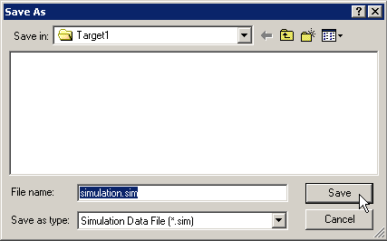
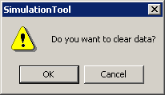
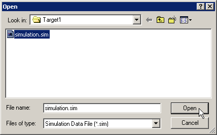

|
|
|
|
|
|
|
|
You can save your simulation settings so you can run the same simulation operations in the future.
Click one of the Set icons then define the simulation settings for that set. Click a different Set icon and define the simulation settings for that set. Define up to four sets of simulation settings.
All four sets of simulation settings are saved as part of the simulation (.sim) file.
Simulation settings are cleared when you exit Simulation. If you run the same simulation settings over and over again, you can save them to a file so you can load them in the future.
In the Simulation Tool, click the Save icon to open the Save As dialog box.
Specify a name for the simulation (.sim) file and click Save.

Use the following steps to set up new sets of simulation settings.
In the Simulation Tool, click the New icon .
When the following message appears, click OK to reset all the simulation settings for all the Sets.

By opening a simulation (.sim) file, you can load simulation settings stored from a previous session.

Variables in the simulation settings that don't exist in the project anymore are ignored. Other variables that are still in the project simulate normally.
In the Simulation Tool, click the Open icon .
In the Open dialog box, select the Simulation (.sim) file you want to load, then click Open.

The simulation settings are loaded into the Simulation Tool.
Click one of the Set icons (1-to-4) to display the settings in that set.